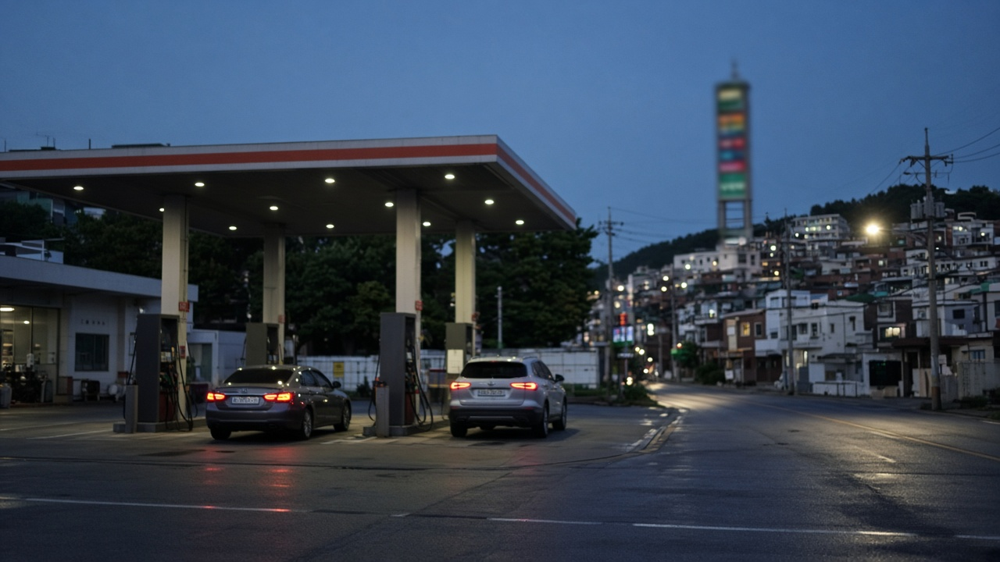

국제유가 3개월 만에 최저, 브렌트유 89달러대인데 우리 동네 기름값은 언제 내려갈까와 주유 전 확인법
국제유가가 크게 떨어졌다는 소식을 보고 주유소 가격판을 봤는데 숫자가 그대로라 고개를 갸웃하신 분들 많으실 거예요. 국제유가가 약 3개월 만에 가장 낮은 수준까지 내려왔는데, 이 하락이 우리 동네 주유소에는 언제쯤, 얼마나 닿을지 그리고 그사이 주유비를 조금이라도 아끼려면 무엇을 확인하면 좋을지 차례로 정리해 볼게요.
국제유가 3퍼센트대 급락, 무슨 일이 있었나
현지시간 23일 런던 ICE선물거래소에서 내년 1월 인도분 브렌트유는 배럴당 89.37달러로 하루 전보다 3.20달러, 비율로는 3.46퍼센트 내렸습니다. 뉴욕상업거래소의 서부텍사스산원유 1월물도 배럴당 80.17달러로 3.24달러, 3.88퍼센트 떨어졌어요. 종가 기준으로 브렌트유는 8월 31일 이후, 서부텍사스산원유는 8월 10일 이후 가장 낮은 값입니다.
가격을 끌어내린 건 공급 소식이었습니다. 중동 지역에서 나오는 원유가 늘었고, 멈춰 있던 리비아 샤라라 유전 송유관이 다시 돌아가 저장시설로 원유가 들어가기 시작했다는 발표가 같은 날 나왔어요. 참고로 10월 평균 브렌트유가 배럴당 108달러 안팎이었던 것과 비교하면 한 달 남짓 사이에 꽤 큰 폭으로 내려온 셈입니다.
그런데 주유소 가격은 왜 그대로일까

11월 24일 오피넷 기준 전국 주유소 평균 판매가격은 휘발유 리터당 1854원, 경유 1841원으로 하루 전보다 각각 1원도 안 되게 내렸습니다. 국제유가가 3퍼센트 넘게 빠진 날과 비교하면 거의 움직임이 없는 셈이죠.
여기에는 두 가지 이유가 있어요. 하나는 시차입니다. 우리나라 주유소 가격은 국제 석유제품 가격이 정유사 공급가격에 반영되고, 다시 주유소가 앞서 사 둔 재고를 소진한 뒤에야 판매가격에 옮겨지는 구조라 보통 몇 주의 간격을 두고 따라갑니다. 오늘 국제유가가 내렸다고 내일 가격판이 바뀌지는 않는 이유예요.
다른 하나는 석유 최고가격제입니다. 정부는 11월 14일 0시부터 4주 동안 적용하는 12차 최고가격을 휘발유 리터당 1784원, 경유 1773원, 등유 1380원으로 11차와 같게 동결했습니다. 산업통상부는 국제유가가 10월보다 내려왔지만 최고가격을 정한 6월 말보다는 여전히 배럴당 20달러 이상 높고 원유 운송비 부담도 크다는 점을 이유로 들었어요. 최고가격 아래에서 가격이 묶여 있던 만큼, 국제유가가 내린다고 해서 그 폭이 곧바로 주유소 가격에 그대로 나타나기는 어렵다는 점을 알아 두시면 좋겠습니다.
앞으로 기름값 흐름, 이렇게 보시면 됩니다
해외에서는 내림세가 이어질 수 있다는 전망이 나옵니다. 연합뉴스 보도에 따르면 JP모건은 중동과 미주 지역 생산이 늘면서 공급이 넘쳐 내년 상반기 유가가 배럴당 70달러대 후반까지 내려갈 수 있다고 내다봤어요. 다만 이는 어디까지나 한 기관의 전망이고, 호르무즈 해협 주변 선박 피격처럼 중동 정세가 다시 흔들리면 방향은 언제든 바뀔 수 있습니다.
국내 가격에서 눈여겨볼 시점은 12차 최고가격 적용 기간이 끝나는 12월 중순 무렵입니다. 정부가 다음 최고가격을 어떻게 정하는지, 그리고 그때까지 국제유가가 지금 수준을 유지하는지가 우리 동네 가격판에 영향을 줄 가능성이 큽니다. 얼마까지 내린다고 단정할 수는 없으니, 숫자는 정부 발표와 오피넷 공지를 보고 판단하시는 편이 정확해요.
주유하기 전에 확인하면 좋은 방법
가장 손쉬운 건 오피넷의 주변 주유소 가격 비교입니다. 집이나 회사 주소, 자주 다니는 길을 기준으로 반경 안의 주유소 가격을 낮은 순서로 볼 수 있어요. 같은 날 기준으로도 지역마다 차이가 꽤 납니다. 이날 오피넷 집계에서 휘발유 평균이 가장 낮은 곳과 가장 높은 곳을 비교하면 시도별로 수십 원 차이가 있었어요.
오피넷 첫 화면에서는 전국 평균과 함께 전날보다 올랐는지 내렸는지를 같이 보여 줍니다. 국제유가가 내린 뒤 몇 주 동안 이 흐름이 계속 내림으로 바뀌는지 지켜보면, 가득 넣을지 필요한 만큼만 넣을지 판단하는 데 도움이 됩니다. 앞으로 내림세가 이어질 것 같으면 한 번에 가득 채우기보다 나눠 넣는 방법도 생각해 볼 수 있어요.
마지막으로 가격판 숫자와 실제 결제 금액을 같이 보세요. 셀프와 일반 주유 가격이 다른 곳이 많고, 표시 가격이 언제 바뀌었는지에 따라 오피넷 숫자와 조금 다를 수 있습니다. 오피넷 가격은 주유소가 알린 값을 모은 것이니 출발 직전에 한 번 더 확인하는 습관이 가장 확실합니다.
참고 자료 연합뉴스 2026년 11월 24일 국제유가 3퍼센트대 급락 기사, 산업통상부 12차 최고가격 동결 참고자료 2026년 11월 13일, 한국석유공사 오피넷 2026년 11월 24일 전국 평균 판매가격
태그 국제유가 국제유가하락 브렌트유 WTI 기름값 휘발유가격 경유가격 석유최고가격제 오피넷 주유비절약